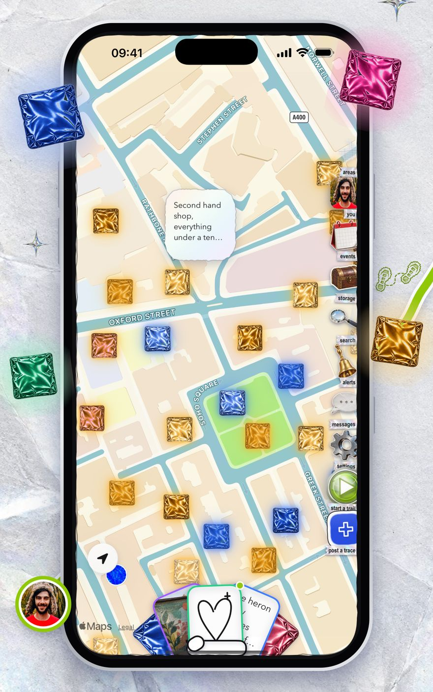
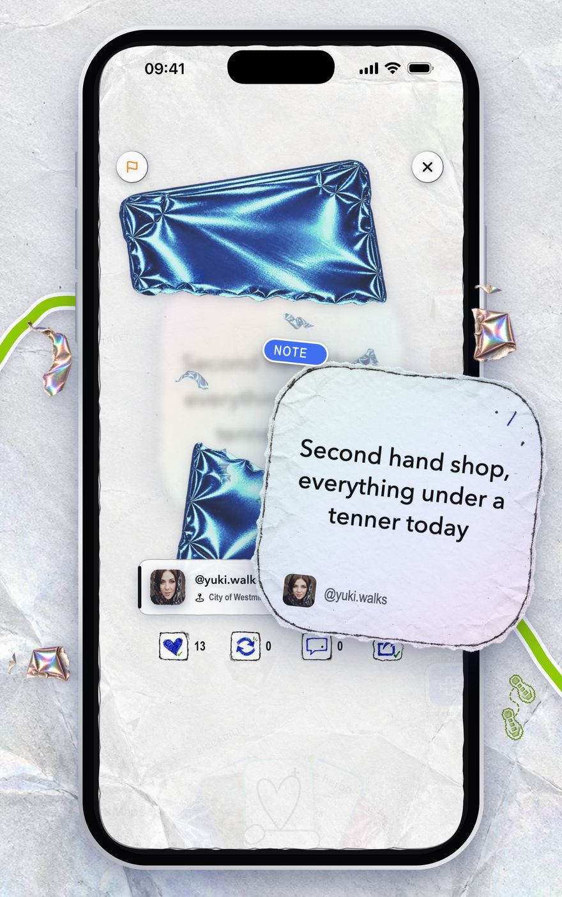
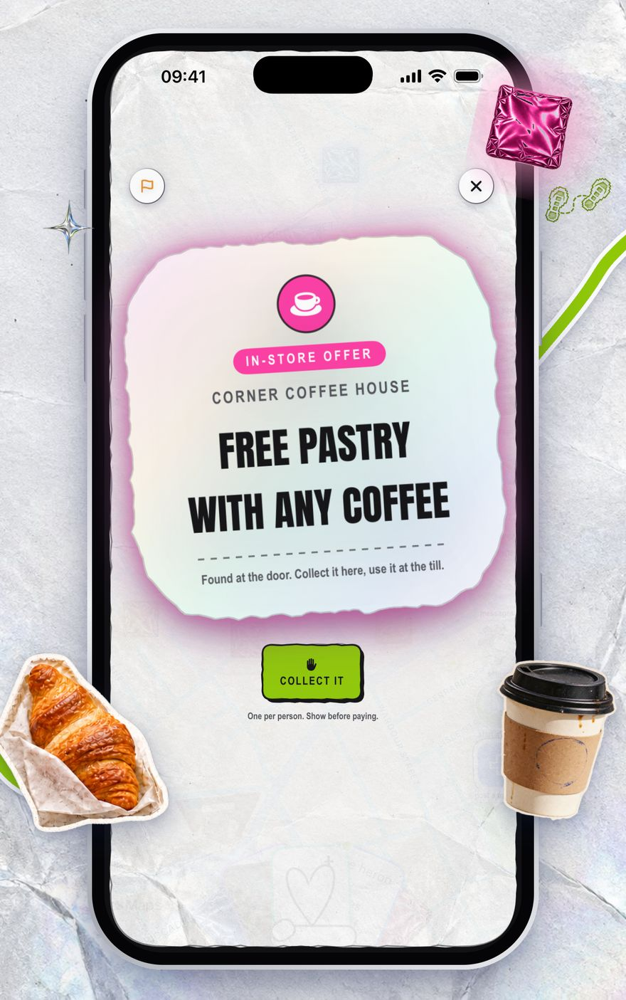
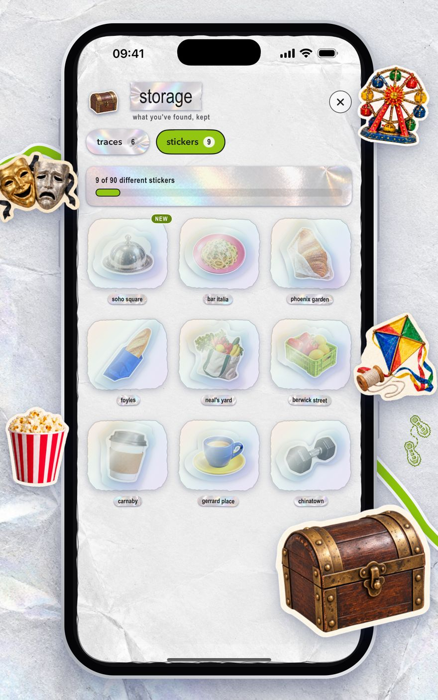
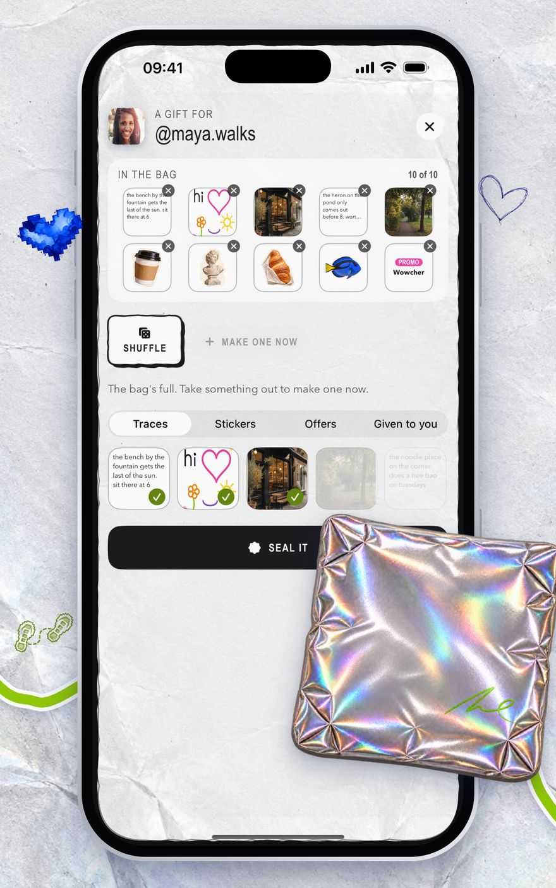
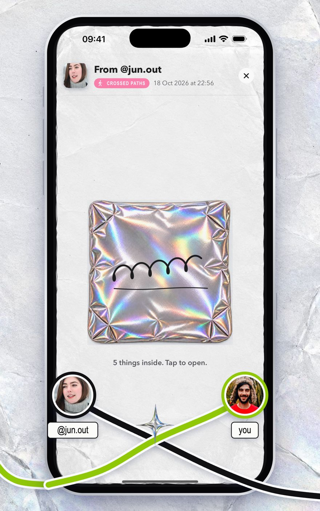
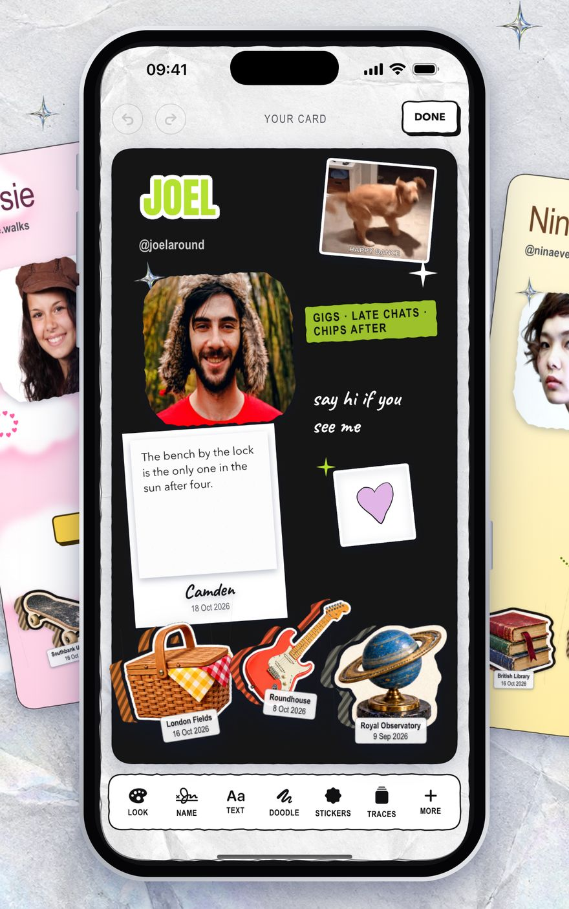
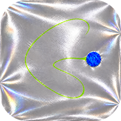

The social network on a map
Your area is full of secrets
walk to unwrap them
Notes, photos and finds are pinned to the streets round you, each one sealed in foil on the map. You can see they're there. You can't see what they say from the sofa.
Press play and walk. The fog lifts behind you, and whatever you walk up to opens.
Free on iPhone · Made in the UK · Ages 16+

02/07
Tear open what people left
sealed till you walk up to it
Get close and the foil comes off. Inside is a trace: a line, a photo or a film someone left on that exact spot. A second-hand shop with everything under a tenner. The bench that gets the last of the sun.
Like it, reply, or retrace it onto your own map. Then leave one of your own for whoever comes along next.

03/07
Uncover treats near you
free museums, gigs, deals & more
Some of what's sealed out there is for you to use: a free pastry with your coffee, a museum that costs nothing on a Sunday, a gig round the corner, a deal in a shop you walk past every day.
Walk up, unwrap it, and collect it at the door.

04/07
Keep everything you find
every sticker, note & photo
Everything you open goes into your storage. Traces you kept, and a sticker from every kind of place you've been: the bakery, the park, the planetarium, the gig.
It fills up the more you go out. Nobody can buy a sticker. You have to have been there.

05/07
Gift your finds to friends
up to ten things in one bag
Pick things from your storage, a trace, a sticker, an offer, and put them in a gift bag. Seal it and send it to a friend.
Not on GoBe yet? Send the gift by text. It waits for them, still sealed, for thirty days.

06/07
Cross paths, swap gifts
pass someone out walking: you each get one
Out on a walk at the same time as someone, a street apart? You've crossed. You each find the other in your drawer, face and name and nothing else, and a gift to open.
It's off until you turn it on, it only happens while you're walking, and GoBe never says where or when.

07/07
Make your page yours
deck it out with things you find
Your page is a scrapbook of where you've been. Pick a look, pin a trace you love, add GIFs, and stick on the stickers you found.
Every page is different, because nobody walked your walks.

Privacy
Your exact location stays off the map.
A map of real places has to keep people safe at them. Here's how GoBe does it.
Traces are saved to a rough spot on a grid about thirty metres across. The exact point is never stored, on your phone or on our servers.
Your walks stay private to you. Crossing paths is off until you turn it on, and works from a block about a hundred metres across, never a point.
Mark home, work or anywhere else as protected and GoBe keeps traces out of it and goes quiet inside it. Protected areas stay on your phone.
GoBe is free, carries no ads and never sells your data. The detail is in the Privacy Policy.
Nothing to pay and no ads.
We never sell it. Delete your account and everything in it whenever you like.
An independent app, made in Britain.
Younger users start on stricter privacy settings.
For investors, partners and press
The short version.
Social networks got very good at keeping people on their phones. GoBe is built to get them out of the house. You post by standing somewhere, what you can open depends on where you are, and the app is working when somebody goes out.
The map is the moat. It's filled in street by street by the people who walk them, it can't be copied into another city, and every trace, treat and find makes it more worth walking for everyone nearby. GoBe grows the way a place does, one street at a time.
Investors, partners and press: contact@gobeapp.co.uk

Go and find something.
it's round the corner. probably.
GoBe is free on the App Store for iPhone.